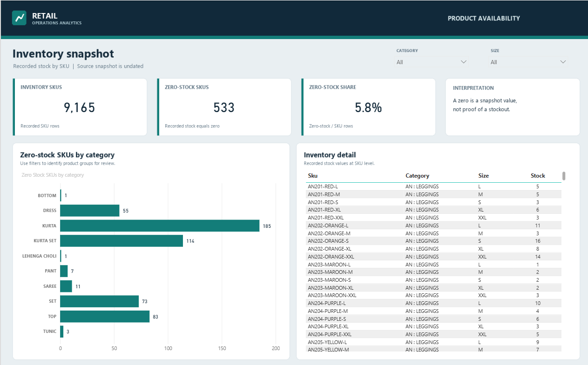

DATA ENGINEERING / ANALYTICS ENGINEERING
Retail Lakehouse
A local data pipeline that turns seven e-commerce source files into validated datasets and business reporting.
Local implementation / Historical datasetVerified local build · Historical source data
FROM SOURCE DATA TO BUSINESS INSIGHT Power BI · Sales and fulfillment
Power BI · Sales and fulfillment Python
Python- Parquet
- DuckDB
- dbt
 Power BI
Power BI

THE QUESTION
Where should a retail team investigate?
Seven files contain sales, stock, price and expense information at different grains. The project separates them into queryable datasets and examines cancellation patterns and an undated inventory snapshot.
ENGINEERING
Keep source meaning intact.
Seven source files contain sales, inventory, pricing, and expense data at different levels of detail. Python inventories each file and preserves its original fields in raw Parquet, creating a traceable starting point for the pipeline.
DuckDB provides a local analytical database for querying and combining the data. dbt organizes the SQL transformations and tests into a repeatable workflow, applying rules suited to each source and producing datasets for analysis and Power BI.
Persistent registries assign product and source-row identifiers to support traceability; source-row identifiers refer to a particular file snapshot. The pipeline keeps the sources at their appropriate levels of detail rather than forcing unrelated records into a single transaction view.
Explore the implementation
DATA QUALITY
Reconcile before reporting.
Every source row is accounted for in the quality summary, so readers can see what was accepted, rejected, or retained as source data.
For inventory, the pipeline accepted 9,165 rows and excluded 106 with missing or duplicated SKUs from the accepted model. For international sales, it accepted 18,635 transaction-like rows and excluded 18,797 rows that did not meet date or required-measure checks. The source includes apparent summary or non-record rows, so those exclusions should not all be interpreted as failed transactions.
The verified local build also passed 24 automated data checks using dbt. These checks include confirming that required identifiers are present and that specified identifiers are unique, helping catch issues before the data reaches reporting.
BUSINESS ANALYSIS
Sales and inventory, in context.
Percent of lines within each fulfillment group. Bar scale: 0–20%.
In the unfiltered sales data, Set and kurta account for the largest category volumes: 50,284 and 49,877 lines, with cancellation rates of 14.6% and 14.5%, respectively. Comparing rates with counts helps distinguish concentration from risk; smaller categories need particular care.
These are descriptive differences, not evidence that a fulfillment method caused cancellations. Cancellation is measured at sales-line level, not order level. Inventory is an undated snapshot; a zero value does not establish a historical stockout or current shortage.
The local Power BI report turns these findings into three focused views: sales and fulfillment, an inventory snapshot, and source quality. It is not yet a public interactive dashboard.
Explore the report walkthrough
1. Sales and fulfillment: Start with cancellation rates, compare fulfillment rates with their underlying line counts, and review cancellation counts by category. Filters let users investigate particular groups.
2. Inventory: Explore recorded zero-stock observations by category and size, while recognizing that the snapshot has no date.
3. Data quality: Review source-level accepted, rejected and unreconciled rows before interpreting results.


Source: E-Commerce Sales Dataset on Kaggle. The report uses historical source data.
Download the interactive Power BI report (.pbix) · Opens in Power BI Desktop. Includes a fixed historical snapshot; it does not automatically update with the lakehouse.
SCOPE AND LIMITATIONS
Clear boundaries matter.
The source does not establish reliable order-level costs, currency across every file, or effective dates for the price sheets. The source files have different grains and are not forced into a single transaction-level view. As a result, the project does not claim profit or compare realized fulfillment costs. This is a local historical-data project, not a cloud deployment or a live operation.